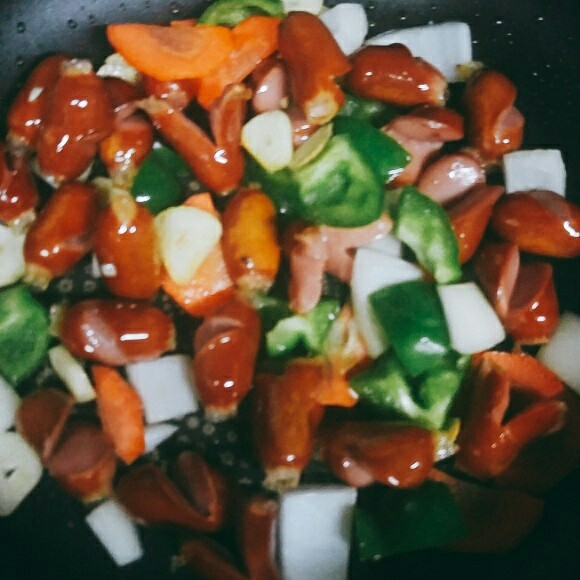

Ingredients
주 재료
- 비엔나소세지300g
- 통마늘3개
- 청당근
- 양파
- 피망약간
양념
- 굴소스1큰술
- 캐첩2큰술
- 설탕1작은술
- 올리고당
- 후추약간
Steps
- 소세지는 불순물 제거를 위해 살짝 데쳐주세요
- 달군 팬에 오일을 두르고 마늘향을 내어주다 양념도 잘 배이고 보기도좋게 칼집 내어준 소세지를 볶아주세요
- 준비해둔 야채도 넣어 익혀주세요

- 문어다리 모양도 내어주고 가운데에도 칼집을내어주니 모양이 여러 가지네요 항상 그렇지만 요리할 땐 놀고 있는 냉장고 야채들 아낌없이 넣어주심 좋아요
야채가 어느 정도 익어가네요 굴 소스와 케첩, 설탕을 넣어 고루 볶아주세요 간을 보고 부족한 건 소금으로 ~
- 윤기를 위해 올리고당 살짝 넣어 버물버물 해서 통깨 듬뿍 뿌려주고 마지막 후추도 톡.톡.. 맛있는 소야볶음 완성~
- 적당한 간이 되어서 그냥도 너무 맛있는 소세지라서 간은 조금 덜하는 것이 소야 볶음의 매력인 거 같아요 그러고 보니 봄 소풍 도시락에도 좋겠네요
시원한 맥주를 부르는 멋진 요리 소야볶음 맛있게 만들어드세요